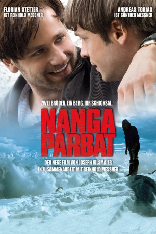

#803 Nanga Parbat
 
 IMDB-Wertung: 6.6 / 10
IMDB-Wertung: 6.6 / 10  Metascore: 0
Metascore: 0 
1970: Karl Maria Herrligkoffer der Halbbruder Merkls und Leiter zahlreicher Himalaja-Expeditionen, lädt die jungen Bergsteiger Reinhold und Günther Messner die sich bereits durch einige Erstbesteigungen in den Alpen und den Anden einen Namen gemacht haben, zu seiner nächsten Expedition zum Nanga Parbat ein. Diesmal soll die Rupalwand an der Südflanke des Berges in Angriff genommen werden, die mit 4.500 Metern höchste Steilwand der Erde. Nachdem die ersten Höhenlager eingerichtet sind, verhindert schlechtes Wetter zunächst den Aufstieg zum Gipfel. Nach langem Warten bittet Reinhold Messner Herrligkoffer um die Erlaubnis zu einem Alleingang, falls sich das Wetter nicht bessern sollte. Herrligkoffer, der eigentlich eine Teamleistung erzielen wollte, willigt widerwillig ein und kurz darauf beginnt Reinhold Messner mit dem Aufstieg.
Jahr: 2010
Dauer: 104 Minuten
FSK: 6
Land: Deutschland Studio: Senator FilmTonspuren:
Untertitel: Deutsch,
Auflösung: 1080p (1920x816) Größe: 6092 MB
Genre: Biographie, Drama
Regisseur: Joseph Vilsmaier
Drehbuch: Reinhard Klooss, Sven Severin
Soundtrack: Gustavo Santaolalla
Darsteller:
 Florian Stetter als Reinhold Messner
Florian Stetter als Reinhold Messner Karl Markovics als Karl Maria Herrligkoffer
Karl Markovics als Karl Maria Herrligkoffer Volker Bruch als Gerd Bauer
Volker Bruch als Gerd Bauer- Markus Krojer als Reinhold Messner jung
- Andreas Tobias als Günther Messner
 Steffen Schroeder als Felix Kuen
Steffen Schroeder als Felix Kuen- Jule Ronstedt als Alice von Hobe
- Sebastian Bezzel als Peter Scholz
 Michael Kranz als Hans Saler
Michael Kranz als Hans Saler Lena Stolze als Mutter Messner
Lena Stolze als Mutter Messner- Horst Kummeth als Vater Messner
- Lorenzo Nedis als Günther Messner jung
 Matthias Habich als Pfarrer
Matthias Habich als Pfarrer- Alexander Held als Dr. Franz Burda
 Sunnyi Melles als Diplomatengattin
Sunnyi Melles als Diplomatengattin- Zulfiqar Ali Chaudhry als Captain Saqui
- Miguel Herz-Kestranek als Diplomat
- Daniela Pfefferkorn als Journalistin
- Hanspeter Eisendle als Bergsteiger
- Pauli Trenkweiler als Bergsteiger
- Oswald Santin als Bergsteiger
- Ingo Irsara als Bergsteiger
- Theresa Vilsmaier als Krankenschwester
- Leo Baumgartner als Die Gestalt
- Thomas Baumgartner als Expeditionsteilnehmer
- Josef Daser als Expeditionsteilnehmer
- Marco Holzer als Expeditionsteilnehmer
- Christoph Kawrza als Expeditionsteilnehmer
- Ludwig Simon Krammer als Expeditionsteilnehmer
- Markus Lienharter als Expeditionsteilnehmer
- Bernd Mayr als Expeditionsteilnehmer
- Sebastian Seehusen als Expeditionsteilnehmer
- Lukas Wurnitsch als Expeditionsteilnehmer
Datei: X:\2010(N-Z)\Nanga Parbat (2010, FSK6, 1920x816).mkv seit 26.03.2015
Festplatte: HD 2010(G-Z)-2011(A-F)
 Es gibt insgesamt 115 Filme in der Gruppe '2010(N-Z)'
Es gibt insgesamt 115 Filme in der Gruppe '2010(N-Z)'